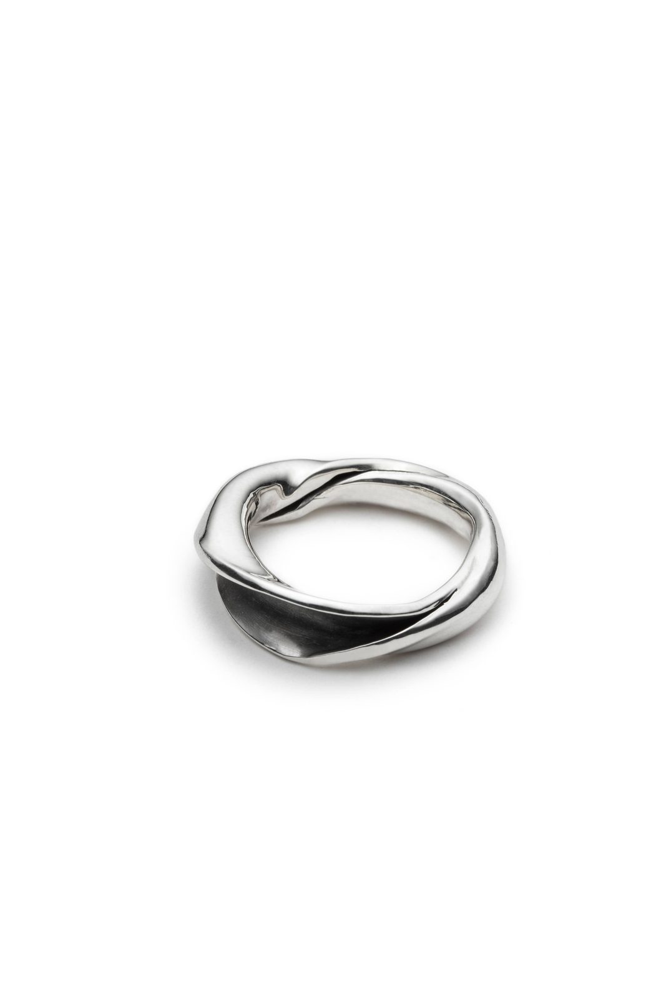

One-off pieces in sterling silver, each one designed, sawn, soldered, set and polished at the bench. Twenty-six of them, from rings and bands to pendants and earrings.
Selected pieces

A citrine set high, held by a crown of prongs cut from the metal itself. The crown is shaped first on the mandrel, then the stone is set by hand.
Material
Sterling silver, citrine
Setting
Crown prongs
Techniques
Sawing, filing, setting
A blackened silver half-moon that opens onto two pearls, on a fine band.
Material
Sterling silver, pearls
Finish
Oxidised interior
A medallion pierced with a tree whose branches reach the rim, on a blackened ground.
Material
Sterling silver
Finish
Pierced, oxidised ground
A wide band, hammered by hand, circled by a braid of silver wire that runs all the way around the finger.
Material
Sterling silver
Finish
Hammered, polished inside
A single band of silver turned on itself, so the light runs along its edge.
Material
Sterling silver
Finish
Mirror polish
1 / 5
Every piece
Every piece here is one of a kind. To talk about one of them, or about working together: